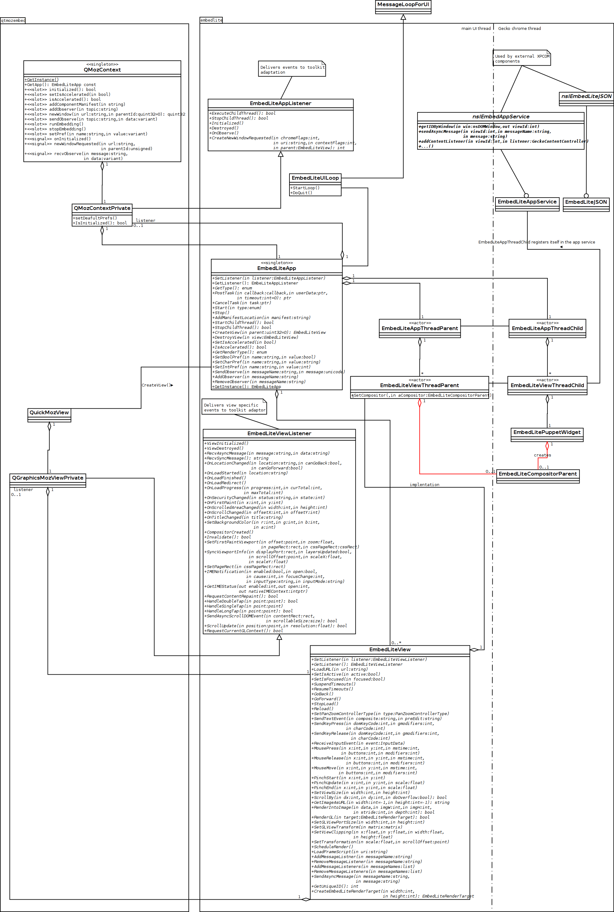

What's behind Sailfish browser
Posted: | More posts about gecko embedlite sailfish
In this post I'd like to shade some light on what technology is used in the browser application for Sailfish OS.
By now it's a widely known fact that the browser is based on the Gecko engine which is developed by Mozilla corp. and is used in their Firefox browser and Firefox OS. For some reason it's not that known that the Sailfish browser is built upon the EmbedLite embedding API (also known as IPCLiteAPI) for Gecko.
This embedding API started as a research project in Nokia by Oleg Romashin and Andrey Petrov at the times when Nokia was still developing the Maemo platform. Currently the project is maintained by Tatiana Meshkova.
It would help us a lot if the API made its way to the main Gecko repository and became a part of the engine. Unfortunately this hasn't happened yet and the current status of such integration you can see in these two bugs:
- https://bugzilla.mozilla.org/show_bug.cgi?id=746800
- https://bugzilla.mozilla.org/show_bug.cgi?id=713681
Later on Oleg has implemented a Qt embedding library (qtmozembed) that uses this API. And this library has enabled the development of a very lightweight Qt-based alternative to the Fennec browser for the Nokia N9 mobile phone. Also this browser has been ported to the Nemo project and packaged as Cutefox. Thanks to Andrey Kozhevnikov (aka CODERus), Stephan Beyerle (aka Morpog), Michael Demetriou (aka qwazix) and Ivaylo Dimitrov (aka freemangordon). The Cutefox browser became a starting point for the Sailfish browser.
Now let's see how all these components work together.
This page breifly describes the architecture of EmbedLite API. The key points are:
- Native UI and Gecko engine live in different threads. Theoretically they can live in different processes thanks to Mozilla's IPDL.
- Rendering is based on off main thread compositing which provides multi-threaded responsive rendering. The same as in Firefox OS and Firefox for Android.
- XUL is not used.
Basically EmbedLite provides API to:
- start/terminate the Gecko engine in a separate thread/process;
- create/destroy a web view;
- install a toolkit specific listeners to receive events generated inside Gecko in the native UI;
- send messages/events from the native UI to Gecko;
- get/set Gecko preferences;
- load XPCOM components needed for features implemented in the native UI.
This functionality is exposed with two main classes: EmbedLiteApp and EmbedLiteView. EmbedLiteApp represents the Gecko engine. Only one instance of this class is allowed to be created. EmbedLiteView represents a web view naturally. It's possible to create many instances of this class.
Also EmbedLite defines two interfaces for toolkit specific listeners: EmbedLiteAppListener and EmbedLiteViewListener. An implementor of a toolkit specific embedding is supposed to implement listeners inhereting to those interfaces. Particularly the Qt embedding I mentioned above implements these two listeners in the classes QMozContextPrivate (derived from EmbedLiteAppListener) and QGraphicsMozViewprivate (derived from EmbedLiteViewListener).
The Sailfish browser doesn't know anything about all these details. They are hidden inside qtmozbed's interface classes:
- QMozContext which encapsulates the web engine (via QMozContextPrivate);
- QuickMozView which encapsulets a web view (via QGraphicsMozViewPrivate) and provides declarative QtQuick interface. In other words it can be used as a QML component in your Qt application.
Here's a bit outdated static model:
{kind=link}
In the next post I'll describe in more details what happens when EmbedLite is initialized and a web view gets created.